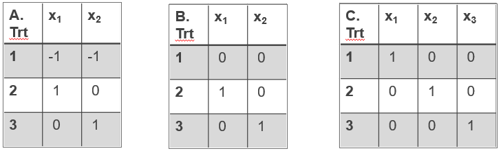

proc logistic data=dataset;
CLASS TRTP /PARAM=REF;
MODEL resp (event="Y") = TRTP ;
run;Logistic Regression
For a brief description of what is logistic regression see here.
Parameterization of model effects (categorical covariates) in SAS
The most common problem when fitting logistic regression in SAS, is getting SAS to model the binary variable (events) and any categorical covariates correctly.
There are two procedures which can be used to perform logistic regression in SAS, proc logistic, and proc genmod (using dist=bin and link=logit options). They obtain the same results when parameterized correctly.
For this example, we will focus on proc logistic but the same concepts apply to both procedures.
Let’s first look at types of parameterization.
Parameterization is what SAS does when you include a categorical variable in your model. It codes that variable using new parameters and it fits those into your model.
The default parameterization is PARAM=EFFECT - This is shown as Example A in the design matrix below.
For the example of a categorical variable trt - which has 3 treatment levels (Active 1, Active 2, Placebo). With the EFFECT option, the reference level (Placebo) is given values of “-1” for both of the x1 and x2 parameters. The design matrix consists of 1 less parameter than the number of levels of your variable (so that for 3 treatment groups you have x1 and x2 - 2 parameters in the model).
Which reference category is selected is specified either by using the ref=‘X’ option, or the default which would be the last value of the variable. In our example this is Placebo (as this is last in the alphabet after Active 1 and Active 2).
Alternatively, you change the parameterization in SAS using the following options:
PARAM=REF - This is shown as Example B below - reference parameter values “0”, n-1 variables
PARAM=GLM - This is shown as Example C below - no reference parameter as such (output compares against last value of treatment group), n variables.
proc logistic data=dataset;
CLASS TRTP /PARAM=GLM;
MODEL resp (event="Y") = TRTP ;
run;Design Matrix Examples

Depending on which parameterization you use, you have to interpret those effects carefully. It is also very important to check the reference assigned is the correct one?
This is also particularly important if you are using any contrast, estimate or lsmestimate statements since the coefficients used for the contrasts must be in line with the parameterization.
Example of deriving constrast statements in SAS
The table below shows the how the parameterizations using EFFECT, REF or GLM, translate to the model being fitted.
Using General model: Y= α + β1x1 + β2x1 {+β3x3}, the treatments are represented as follows:
Treatment Effect(A) REF (B) GLM (C)
-----------------------------------------------------------------------------
Active A Y = α + β1 Y = α + β1 Y = α + β1
Active B Y = α + β2 Y = α + β2 Y = α + β2
Placebo Y = α - β1 - β2 Y = α Y = α + β3
--------------------------------------------------------Now let’s suppose we wanted to compare the average of the Active Treatment groups versus the Placebo treatment group. (A+B)/2 compared to Placebo.
EFFECT (A) parameterization
((α + β1 + α + β2 ) /2 ) - (α - β1 - β2)
= α + 0.5 β1 + 0.5 β2 - α + β1 + β2
= 1.5 β1 + 1.5 β2Therefore, to apply this contrast in SAS we would use:
PROC LOGISTIC data=dataset;
CLASS trt ; -default PARAM=EFFECT option is used so last trt is reference
MODEL resp (event="Y") = trt ;
CONTRAST "Active (A & B) vs. Placebo" trt 1.5 1.5 / e;
RUN;GLM (C) parameterization
The GLM parameterization can be more intuitive.
((α + β1 + α + β2)/2 - (α + β3)
= α + 0.5 β1 + 0.5 β2 - α - β3
= 0.5 β1 + 0.5 β2 - β3Therefore, to apply this contrast in SAS we would use:
PROC LOGISTIC data=dataset;
CLASS trt / param=glm;
MODEL resp (event="Y") = trt ;
CONTRAST "Active (2 & 3) vs. Placebo (1)" trt 0.5 0.5 -1 / e;
RUN;For this reason, it is common to either use the default PARAM=Effect with ref=“X” option. or to use the param=GLM with no ref=“X” option. It is very important to check the output design matrix so you know what parameterization and reference groups are being used.
Ensuring you are modelling the correct Binary event in SAS
With logistic regression, we often want to model the number of “Successes”. However, by default, SAS sorts alphabetically/numerically and selects the first occurring EVENT alphabetically as the one it’s going to model.
It’s a common mistake, and we find SAS modelling the number of failures instead of successes. Very common when your response is: ‘Responder’ vs ‘Non-responder’, SAS will model the Non-responders as ‘N’ is alphabetically first before ‘R’!
For this reason, It is recommended to always use the event=“Y” option.
Options such as ORDER=DATA|FORMATTED|FREQ|INTERNAL as well as descending can be used to ensure the correct levels of classification variables are being modelled. More detail here
Modelling the lung cancer data
As described above, we can use proc logistic or prog genmod to perform a logistic regression. Just make sure the parameterization is correct. To demonstrate the use of logistic regression we examine the same lung dataset as used in the R example here.
The following could be used, however, to match R, Sex and ECOG are treated as continuous parameters in this example, hence option 3 will be used.
Option 1
proc logistic data=lung2;
class sex (ref="1") ph_ecog (ref="0");
model wt_grp(event="weight_gain") = age sex ph_ecog meal_cal;
run;
Option 2
proc genmod data=lung;
class sex (ref="1") ph_ecog (ref="0");
model wt_grp (event="weight_gain") = age sex ph_ecog meal_cal / dist=bin link=logit;
run;
Option 3
proc logistic data=lung2;
model wt_grp(event="weight_gain") = age sex ph_ecog meal_cal;
run;We analyze the weight gain in lung cancer patients in dependency of age, sex, ECOG performance score and calories consumed at meals. Weight is categorized into a binary variable for Loss or Gain. The probability modelled is weight_gain.
We fit 3 models. In
Model 1: Weight Loss (1/0) = Age + Sex + ECOG + Calories
Model 2: Weight Loss (1/0) = Sex + ECOG + Calories
Model 3: Using backwards selection to compare models with/without age
title1 "Model 1";
proc logistic data=lung2;
model wt_grp (event="weight_gain") = age sex ph_ecog meal_cal;
run;
Response Profile
Ordered value wt_grp Total Frequency
-----------------------------------------------------------------------------
1 weight_gain 122
2 weight_loss 48
-----------------------------------------------------------------------------
Model 1 Results
Analysis of Maximum Likelihood Estimates
Parameter DF Estimate Standard Error Wald Chi-Square Pr>ChiSq
-----------------------------------------------------------------------------
Intercept 1 3.2632 1.6488 3.9168 0.0478
Age 1 -0.0102 0.0208 0.2389 0.6250
Sex 1 -0.8717 0.3714 5.5090 0.0189
ph_ecog 1 0.4180 0.2589 2.6069 0.1064
meal_cal 1 -0.00089 0.000447 3.9417 0.0471
----------------------------------------------------------------------------
Model Fit Statistics
Criterion Intercept Only Intercept and Covariates
--------------------------------------------------------
AIC 204.355 201.505
SC 207.491 217.184
-2 Log L 202.355 191.505
--------------------------------------------------------title1 "Model 2";
proc logistic data=lung2;
model wt_grp (event="weight_gain") = sex ph_ecog meal_cal;
run;
Model 2 Results
Analysis of Maximum Likelihood Estimates
Parameter DF Estimate Standard Error Wald Chi-Square Pr>ChiSq
-----------------------------------------------------------------------------
Intercept 1 2.5607 0.7977 10.3047 0.0013
Sex 1 -0.8359 0.3637 5.2815 0.0216
ph_ecog 1 0.3794 0.2469 2.3616 0.1244
meal_cal 1 -0.00083 0.000435 3.6770 0.0552
----------------------------------------------------------------------------
Model Fit Statistics
Criterion Intercept Only Intercept and Covariates
--------------------------------------------------------
AIC 204.355 201.505
SC 207.491 217.184
-2 Log L 202.355 191.505
--------------------------------------------------------title1 "Using selection=backward to get model comparison stats";
proc logistic data=lung2;
model wt_grp (event="weight_gain") = age sex ph_ecog meal_cal / selection = backward stop=3;
run;
Step 1: Effect age is removed
Summary of Backward Elimination
Step Effect Removed DF Number In Wald Chi-Square Pr>ChiSq
-----------------------------------------------------------------------------
1 Age 1 3 0.2389 0.6250
-----------------------------------------------------------------------------Note: The number of effects in the model has reached STOP=3, (when 3 variables remain in the model, it will not proceed to remove any more even if the ones left are not significant)
Model 3 Results
Analysis of Maximum Likelihood Estimates
Parameter DF Estimate Standard Error Wald Chi-Square Pr>ChiSq
-----------------------------------------------------------------------------
Intercept 1 2.5607 0.7977 10.3047 0.0013
Sex 1 -0.8359 0.3637 5.2815 0.0216
ph_ecog 1 0.3794 0.2469 2.3616 0.1244
meal_cal 1 -0.00083 0.000435 3.6770 0.0552
----------------------------------------------------------------------------NOTE: the chi-square test summary of backward elimination, p=0.6250 is different to the results in R, which gave a difference in deviance of -0.24046, p=0.6239. This difference is currently being investigated.